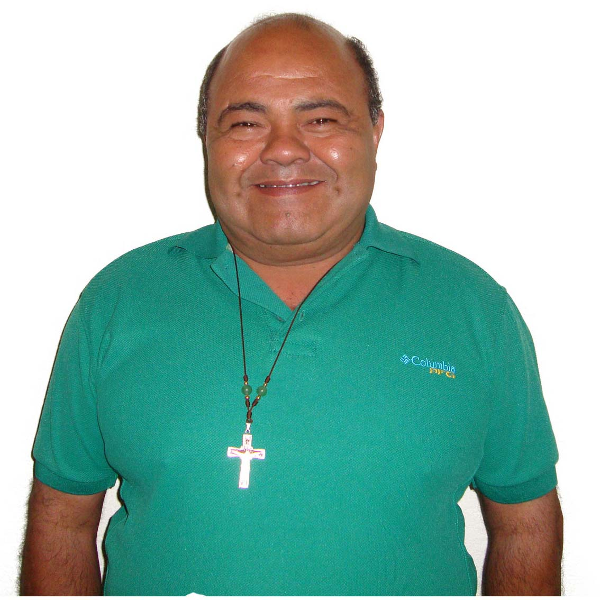
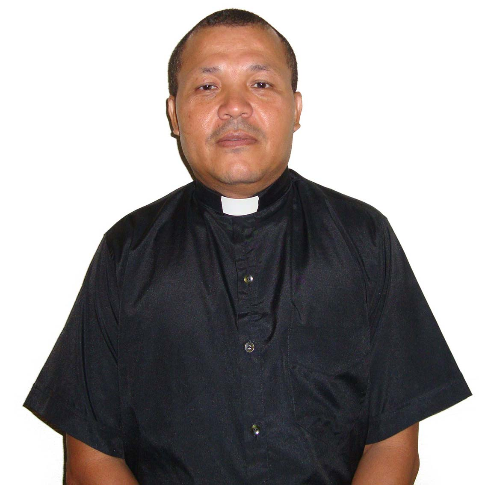
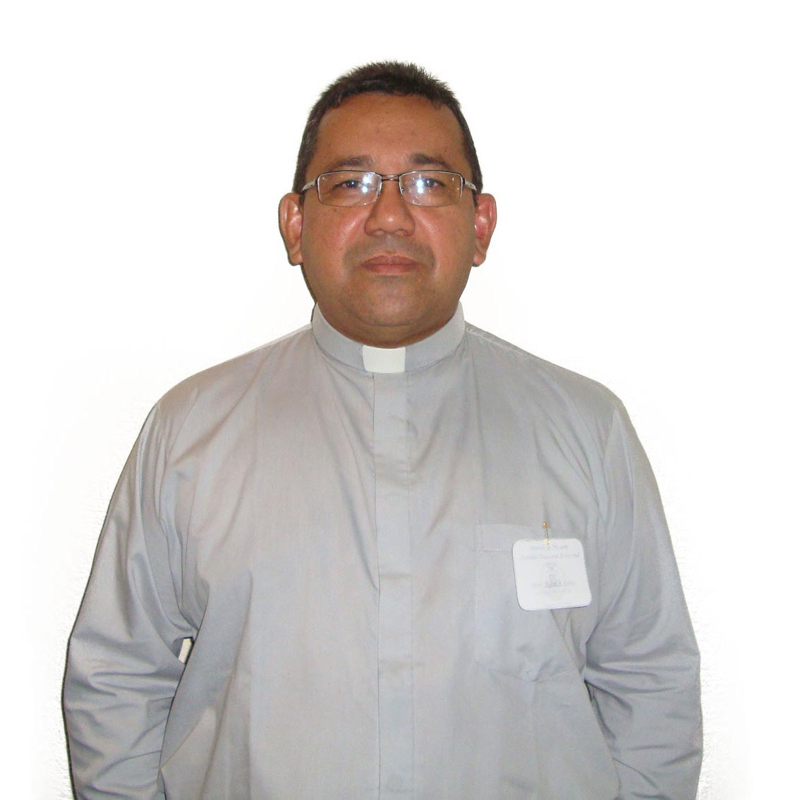

Clero
Cecilio Marchán
Parroquia San Isidro Labrador
Fernando Duarte
Parroquia San José y San-Juan Eudes
Jassiel Rincones
Parroquia San José Obrero
Javier Coa
Parroquia San Carlos BorromeoJesús Salvador Tirado
Parroquia San Antonio de Padua
Jimmi Diaz
Parroquia San MaturínJosue Pérez
Director de Estudio Seminario Mayor San Pablo Apostol Economo
Manuel Gerónimo Sifontes
Parroquia Nuestra Señora De CoromotoMarcelino D´Arthenay
Vicario. Parroquia Santisima Cruz
Mauro Martinez
Parroquia Santisima Trinidad y Virgen del Valle
Miguel Febres
Vicarío General de la Diócesis Parroquia Santísima Cruz